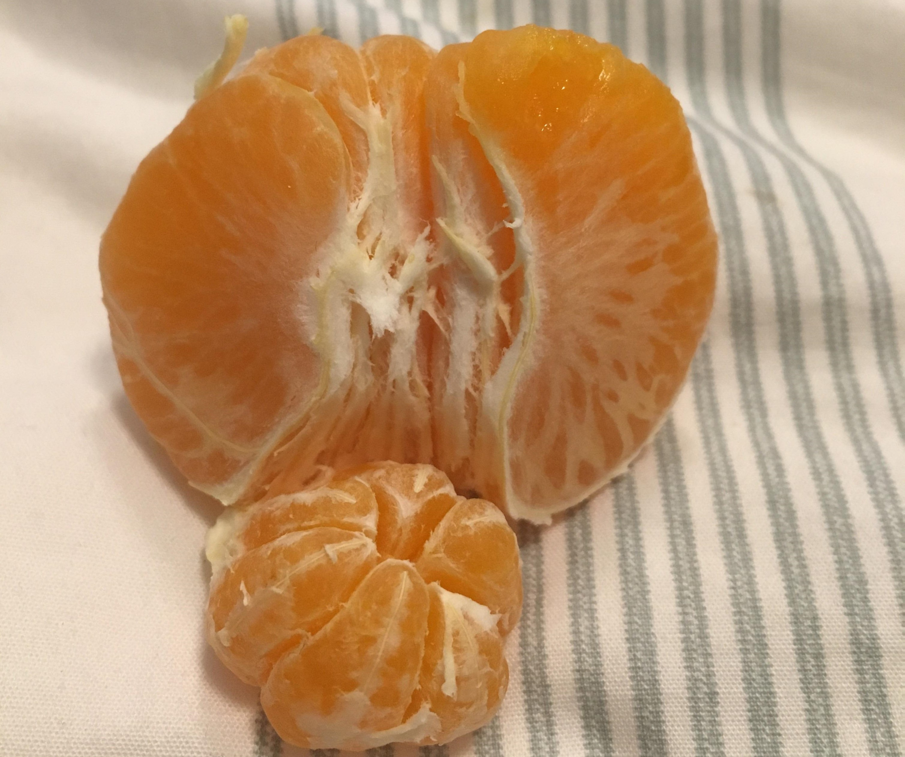
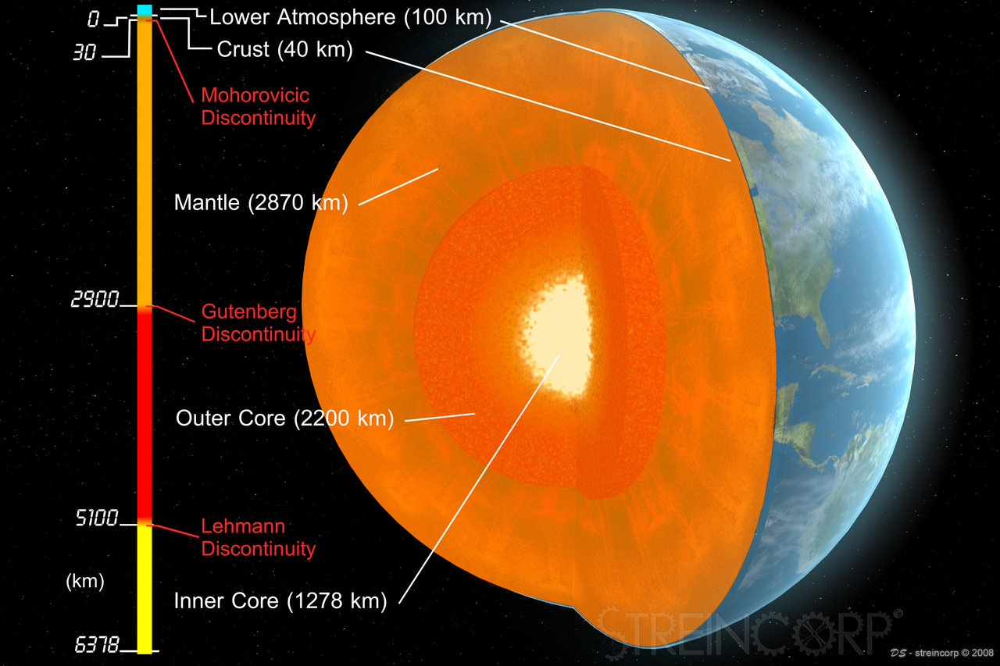
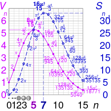

High-Dimensional data and their projections
Data Science context
Dataset: n points in a d-dimensional space:
essentially, a \(n \times d\) matrix of floats
For \(d > 3\) and growing, several practical problems
1-hot encodings raise dimensionality

How to see dimensions
data points are row vectors
| X1 | X2 | … | Xd | |
|---|---|---|---|---|
| x1 | x11 | x12 | … | x1d |
| … | … | … | … | … |
| xn | xn1 | xn2 | … | xnd |
Issues
visualization is hard, we need projection. Which?
decision-making is impaired by the need of chosing which dimensions to operate on
sensitivity analyis or causal analysis: which dimension affects others?
Issues with High-Dim. data
I: a false sense of sparsity
adding dimensions makes points seems further apart:
| Name | Type | Degrees |
|---|---|---|
| Chianti | Red | 12.5 |
| Grenache | Rose | 12 |
| Bordeaux | Red | 12.5 |
| Cannonau | Red | 13.5 |
d(Chianti, Bordeaux) = 0
let type differences count for 1:
d(red, rose) = 1
take the alcohol strengh as integer tenths-of-degree: d(12, 12.5) = 5
d(Chianti, Grenache) = \(\sqrt{ 1^2 + 5^2} =5.1\)
Adding further dimensions make points seem further from each other
not close anymore?
| Name | Type | Degrees | Grape | Year |
|---|---|---|---|---|
| Chianti | Red | 12.5 | Sangiovese | 2016 |
| Grenache | Rose | 12 | Grenache | 2011 |
| Bordeaux | Red | 12.5 | 2009 | |
| Cannonau | Red | 13.5 | Grenache | 2015 |
d(Chianti, Bordeaux) > 7
d(Chianti, Grenache) > \(\sqrt{5^2 + 1^2 + 5^2} =7.14\)
II: the collapsing on the surface
Bodies have most of their mass distributed close to the surface (even under uniform density)
the outer orange is twice as big, but how much more juice will it give?
for d=3, \(vol= \frac{4}{3}\pi r^3\).
With 50% radius, vol. is only \(\frac{1}{8}=12.5\%\)
Possibly misguiding
The most volume (and thus weight) is in the external ring (the equators)
counter-intuitive properties
At a fixed radius (r=1), raising dimensionality above 5 in fact decreases the volume.
{kind=link}
Hyperballs deflate.
Geometry is not what we experienced in \(d\leq 3.\)
The Curse of dimensionality
Volume will concentrate near the surface: most points will look as if they are at a uniform distance from each other
- distance-based similarity fails
Consequences
Adding dimensions apparently increases sparsity
Deceiving as a chance to get a clean-cut segmentation of the data, as we did with Iris
In high dimension, all points tend to be at the same distance from each other
Exp: generate a set of random points in \(D^n\), compute Frobenius norms: very little variance.
bye bye clustering algorithms, e.g., k-NN.
The porcupine
At high dimensions,
all diagonals strangely become orthogonal to the axes
points distributed along a diagonal gets ``compressed down’’ to the origin of axes.
bye bye to all distance-based algorithms and similarity measures, e.g., Cosine Similarity.